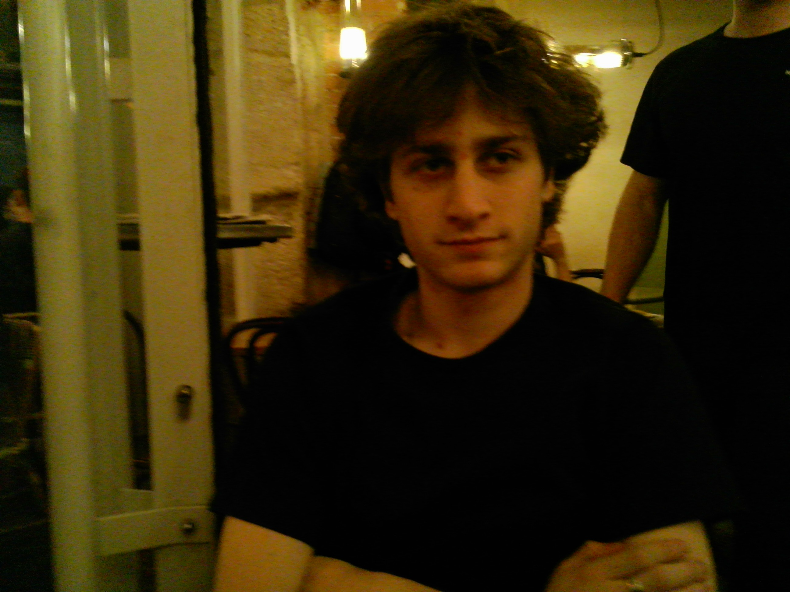

NICK TAVAF
Technology Design · Parsons School of Design · New York, NY
About

I'm a senior at Parsons School of Design studying Technology Design. I build things that sit between the physical and the digital: objects with electronics inside, games that reach off the screen, and software I actually use every day.
I'm originally from Iran and grew up in Los Angeles. I like knowing how things work, and most of my projects start with taking something familiar, like a lamp, a lock or an arcade game, and rebuilding it my own way.
What I Do
- Physical computing: Arduino, sensors, motors, LEDs, wiring and soldering
- Fabrication: enclosures in cardboard, metal and 3D-printed parts
- Interactive and web design: HTML, CSS, JavaScript
- Game and interaction prototyping with Unity
- Local AI and voice interfaces
Currently
Liam, my thesis: a privacy-first AI companion that runs entirely on one device. It learns about you through conversation and keeps everything in one place, so if you want it to forget, you just get rid of the device.
Coursely: an assignment tracker I built for my own classes, now being prepared for the App Store.
Outside of School
I run a small business restoring and reselling BMW E30s. I source the cars, handle the interior work myself, and work with engine and paint specialists on the rest. My rule for it is quality over volume. I also design and build bed frames with a friend.
Selected Work
Contact
- aryatavaf9@gmail.com
- GitHub
- github.com/NickTavaf